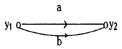
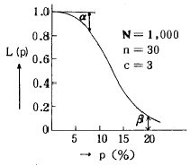
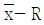

금속재료기능장 (2003-03-30 기출문제)
1과목: 임의 구분
1. 강의 담금질 조직으로 경도가 가장 높은 것은?
- 오스테나이트
- 페라이트
- 마텐자이트
- 펄라이트
(정답률: 95%)

2. 마텐자이트 변태에서 경도가 증가하는 이유가 아닌 것은?
- 급냉으로 인한 내부응력
- FCC 결정구조의 생성
- 결정의 미세화
- 탄소원자에 의한 Fe 격자의 강화
(정답률: 63%)
3. 철강에 강도와 인성을 주고 비틀림이나 균열을 방지 하기 위한 열처리로서 오스템퍼링(Austempering)했을 때 나타나는 주 조직명(名)은?
- 마텐자이트
- 시멘타이트
- 페라이트
- 베이나이트
(정답률: 83%)
4. 강의 중간 풀림은 어떤 온도구간에서 열처리하는 저온 풀림인가?
- A1+30~50℃ 까지 가열하고 급냉하는 처리
- A1+30~50℃ 까지 가열하고 공냉하는 처리
- A1 점 이하의 온도로 연화풀림하는 처리
- A3+30~50℃ 까지 가열하고 급히 냉각하는 처리
(정답률: 60%)
5. Sub-zero 처리의 특징에 대한 설명 중 틀린 것은?
- 담금질강의 경도 균일화
- 담금질경도의 감소
- 시효변형의 방지
- 잔류 오스테나이트의 안정화
(정답률: 100%)
6. 침탄처리 후 1차 담금질을 하는 목적은?
- 조대화한 표면부의 조직을 미세화 한다.
- 조대화한 중심부의 조직을 미세화 한다.
- 중심부의 Martensite 를 Austenite 화 한다.
- 표면부의 Martensite 를 Austenite 화 한다.
(정답률: 57%)
7. 가스침탄 작업시 노내 분위기 관리에 사용되는 부대설비 중 노점측정과 관련이 가장 적은 것은?
- 듀 컵(Dew cup)식 측정기
- 포그 쳄버(Fog chamber)식 측정기
- 염화리튬(LiCl)식 측정기
- 연강박판식 측정기
(정답률: 62%)
8. 공구강의 경도증가와 성능향상 및 게이지나 베어링 등의 정밀 기계부품의 조직을 안전하게 하여 시효(aging)에 의한 치수 변화를 방지할 수 있는 처리는?
- 구상화처리
- 칠화
- 심냉처리
- 표면경화처리
(정답률: 65%)
9. Ferrite계 Stainless강이 475℃에서 취성이 생기는 것을 방지하기 위한 가장 적합한 처리는?
- 475℃ 부근에서 급냉한다.
- 600℃ 이상 가열하여 급냉한다.
- 475℃ 부근에서 심냉처리한다.
- 600℃에서 서냉 시킨다.
(정답률: 57%)
10. 재료에 일정한 하중을 가하고 일정한 온도에서 긴시간 동안 유지하면 시간이 경과함에 따라 변형량이 증가하는 것은?
- 피로
- 연신
- 크리프
- 인장연율
(정답률: 95%)
11. 금속의 합금과정에서 원소의 분포가 불균일하여 발생되는 불연속은?
- 비금속 개재물(nonmetallic inclusion)
- 시임(seam)
- 적층(lamination)
- 편석(segregation)
(정답률: 54%)
12. 재료의 인성(toughness)을 측정할 수 있는 시험방법은?
- 누프시험
- 경도시험
- 피로시험
- 충격시험
(정답률: 77%)
13. 금속의 변태점을 측정하는 방법으로 옳지 않는 것은?
- 열분석법
- 열팽창법
- 전기저항법
- 형광검사법
(정답률: 94%)
14. 직경 10 mm, 높이 20 mm 의 시험편을 압축시험하여 Pmax는 1000 Kgf 이고 파단각이 45° 일 때 전단저항은 약 얼마인가?
- 1.24 Kgf/㎜2
- 3.53 Kgf/㎜2
- 6.35 Kgf/㎜2
- 12.73 Kgf/㎜2
(정답률: 29%)
15. 최소변율속도에 의한 크리프한도는?
- 3∼6 시간 후의 평균 변형속도가 0.0⑤%/hr 로 되는 응력
- 5∼10 시간 후의 평균 변형속도가 0.003%/hr 로 되는 응력
- 25∼35 시간 후의 평균 변형속도가 0.0015%/hr 로 되는 응력
- 40일 후의 변형속도가 10-5%/day 일 때의 응력
(정답률: 50%)
16. 고급주철의 인장강도는?
- 30 Kgf/㎜2 이상
- 15 Kgf/㎜2 이상
- 10 Kgf/㎜2 이상
- 5 Kgf/㎜2 이상
(정답률: 91%)
17. 현미경 조직시험용 부식(Etching)시약 중 철강 재료용이 아닌 것은?
- Nital
- Picral
- Kalling
- Vilella
(정답률: 73%)
18. 아공정 조성의 보통 주철에서 유동성을 가장 저해하는 원소는?
- Si
- C
- S
- Mn
(정답률: 58%)
19. 석출경화성 구리합금으로 강도와 경도가 가장 높은 것은?
- Al-Cu 청동
- Ni-Cu 청동
- Cu-Be 청동
- Cu-Si 청동
(정답률: 73%)
20. Austenite 구역을 폐쇄시키는 원소는?
- Ni
- V,Cr
- Mn
- Cu,N
(정답률: 69%)
2과목: 임의 구분
21. 강에 못지 않는 강인성을 가지는 구상흑연주철을 제조할 때 사용되는 첨가제로 가장 적합한 것은?
- Cu
- Aℓ
- Mg
- Zn
(정답률: 70%)
22. 18-8(Cr18%-Ni8%) stainless 강은 무슨 조직을 갖는가?
- Pearlite
- Ferrite
- Austenite
- Martensite
(정답률: 89%)
23. 주철의 성장 방지대책이 아닌 것은?
- 흑연을 미세화 시킨다.
- C, Si 양을 저하시킨다.
- 탄화물 안정 원소인 Cr, Mn 등을 첨가시킨다.
- 편상흑연을 많이 생성시킨다.
(정답률: 93%)
24. 자기변태점을 갖지 않는 금속은?
- Fe
- Sn
- Co
- Ni
(정답률: 57%)
25. 금속 결정의 응고와 형성과정에 관한 설명 중 틀린 것은?
- 고온의 용융금속이 냉각하여 응고점에 도달하면 융체 내의 여러 곳에서 극히 미세한 결정의 핵이 생긴다.
- 생성된 결정핵은 나무가지 모양으로 발달한다.
- 결정의 형성순서는 핵발생→ 핵의 성장→ 결정경계형성으로 된다.
- 순금속의 단결정은 반드시 괴상 또는 단면체 조직을 형성한다.
(정답률: 91%)
26. 용융 금속을 물속에 급냉하여 응고시키면 결정 조직은?
- 핵 생성수가 적어져서 조대한 조직이 된다.
- 핵 생성수가 많아져서 조대한 수지상조직이 된다.
- 핵 생성수가 많아져서 미세한 결정립이 된다.
- 핵 생성수가 적어져서 미세한 수지상조직이 된다.
(정답률: 100%)
27. 희토류원소(rare earth element)의 천연 산출물 밋쉬메탈(misch metal)의 주 성분은?
- Ed
- Er
- Ce
- Yb
(정답률: 84%)
28. 용접부내 결함 깊이를 측정할 수 있는 비파괴시험으로 적합한 것은?
- 누설 투과검사법
- 초음파 탐상법
- 스프링시험법
- 형광 침투탐상법
(정답률: 100%)
29. 용접부의 방사선투과시험규격에 규정되어 있는 투과사진이 구비해야 하는 조건 중 관련이 가장 적은 것은?
- 서베이메타의 용량
- 계조계의 농도차
- 투과사진의 농도범위
- 투과도계 식별도
(정답률: 59%)
30. 인코넬(inconel)600으로 제조된 튜브의 내면에 존재하는 결함을 탐상하는데 적합한 것은?
- 와전류탐상시험
- 크리프시험
- 아이죠드시험
- 누설응력시험
(정답률: 84%)
31. 자분탐상검사시 자화할 때 고려해야 할 사항이 아닌것은?
- 자장의 방향을 예측되는 결함의 방향에 대하여 가급적 직각이 되게 한다.
- 자장의 방향을 시험면에 가급적 평행이 되게 한다.
- 반자장을 많게한다.
- 시험편을 소손해서는 안될 경우에는 시험품에 직접통전하지 않는 자화방법을 선택한다.
(정답률: 74%)
32. 초음파탐상에서 탐상도형 중 일정높이 이하의 에코 또는 노이즈를 억제하는 것은?
- 주사
- 펄스
- 리젝션
- 음향방출
(정답률: 80%)
33. 직경 50 mm 인 원통형의 시험체를 자분탐상 시험할 때 원주방향의 결함검출에 적합한 자화방법은?
- 축 침투법
- 습식 유화법
- 코일법
- 분무 노즐법
(정답률: 95%)
34. 용접부 결함검사 때 주로 많이 사용되는 비파괴검사 방법은?
- 방사선투과시험
- 설퍼프린트시험
- 음향방출시험
- 와전류탐상시험
(정답률: 80%)
35. 다음 재료 중 자화될 수 없는 것은?
- 철
- 니켈
- 코발트
- 금
(정답률: 80%)
36. 선량당량은 단위로 SV(Sie Vert)를 사용한다. 1 SV는 몇 rem인가?
- 1
- 10
- 100
- 1000
(정답률: 86%)
37. 안전책, 안전위생, 진행에 관한 일반적인 지시나 시사를 하기 위하여 사용되는 안전지도 표지는?
- 녹색
- 황색
- 적색
- 흑색
(정답률: 87%)
38. 모세관 현상을 이용하여 결함을 탐상하는 방법은?
- RT
- UT
- MT
- PT
(정답률: 79%)
39. 열처리로의 자동온도 제어방식에 해당되지 않는 것은?
- 비례 제어
- 3위치 제어
- 적분 제어
- 미분 제어
(정답률: 69%)
40. 침탄 담금질시 경도 부족현상이 아닌 것은?
- 침탄량이 부족할 때
- 담금질 온도가 높을 때
- 탈탄이 되었을 때
- 담금질의 냉각속도가 느릴 때
(정답률: 80%)
3과목: 임의 구분
41. 충격시험으로 사용되는 샬피(charpy) 충격시험에서 충격값을 나타내는 단위는?
- ㎏fㆍm
- ㎏fㆍm/㎝2
- tonfㆍcm/㎜2
- ㎏f/㎜2
(정답률: 77%)
42. 퀜칭냉각 중 인상한 부품의 온도가 몇도 인지 알아 보기위해 나무성냥으로 그어 보았더니 성냥의 화약만 발화하였을 때의 추정온도(℃)는?
- 70
- 270
- 550
- 800
(정답률: 67%)
43. 현미경 배율 100배에서 강의 페라이트 결정립의 수를 측정한 결과 25mm2 중에 128개 이었을 때 페라이트 결정입도 번호는?
- 1번
- 5번
- 7번
- 8번
(정답률: 75%)
44. 전자 유도시험의 장점은?
- 형상이 복잡해도 적용할 수 있다.
- 표면밑의 깊은 위치에 있는 결함도 검출이 용이하다.
- 비접촉적 방법으로 시험속도가 빠르다.
- 재료적 요인에 의해 잡음이 전혀 발생되지 않는다.
(정답률: 91%)
45. 운반 작업장의 통로, 계단, 출입구의 정리정돈 상태에 어긋나는 것은?
- 통로를 넓히기 위하여 물건을 통로 한쪽으로 세워 놓는다.
- 비상구는 위치를 명확히 하고 문은 밖 여닫이로 한다.
- 기계와 기계사이, 기계와 다른 설비사이의 통로는 그 나비를 80㎝ 이상으로 한다.
- 계단과 승강구의 조명은 일반 통로보다 밝게 한다.
(정답률: 77%)
46. 황동의 가공재를 상온에서 방치하거나 저온풀림 경화시킨 스프링재가 사용 도중 시간의 경과에 따라 경도 등 여러가지 성질이 악화되고 그 원인은 가공에 의한 불균일 응력이 균일화하는데 기인되며 가공도가 낮을수록 심하게 나타나는 현상은?
- 경년변화
- 자연균열
- 고온 탈아연
- 탈아연 부식
(정답률: 93%)
47. 강용접부의 투과 두께가 150㎜ 일 때 투과시험에 사용할 γ선원으로 가장 효율적인 것은?
- Ir-192
- Cs-137
- Tm-170
- Co-60
(정답률: 47%)
48. 육안검사를 할 경우 시험기술자가 먼저 알아야 할 시험체 자체에 관한 지식과 가장 관계가 먼 것은?
- 시험체의 재료
- 발생하는 결함의 종류와 위치
- 지시의 허용치
- 가공방법
(정답률: 46%)
49. 기계적으로 +, ㅡ 방향의 한계점을 설정해주는 신호는?
- 리밋
- 서보레디
- 포인트 투 포인트
- 티칭 플레이 백
(정답률: 79%)
50. FMS 데이터 파일이 아닌 것은?
- 경로 파일
- 공구수명파일
- 부품생산파일
- 한글파일
(정답률: 100%)
51. 3차원 솔리드 모델링의 분류 중 CSG와 B-rep방식에 대한 설명 중 틀린 것은?
- CSG방식이 B-rep 방식에 비해 데이터의 구조가 단순하다.
- CSG가 B-rep 에 비해 전개도의 작성이 용이하다.
- CSG가 B-rep 에 비해 필요한 메모리의 양이작다.
- CSG가 B-rep 에 비해 형상 수정이 용이하다.
(정답률: 57%)
52. 그림과 같은 신호-흐름선도의 선형 방정식은?

- y2 = (a+b)y1
- y2 = aby1
- y2 = (a/b)y1
- y2 = (1/ab)y1
(정답률: 50%)
53. 강의 경화능을 측정하는 시험은?
- 조미니 시험법
- X-RAY 시험법
- 냉각곡선법
- 응력-변형곡선법
(정답률: 88%)
54. 강의 풀림에 대한 설명 중 틀린 것은?
- 일정한 온도에 어느 시간 가열 후 늦은 냉각속도로 냉각하는 작업이다.
- 냉간가공이나 담금질 등의 영향을 줄이기 위하여 한다.
- 구상화 풀림은 소성가공을 용이하게 한다.
- 완전풀림시 나타나는 조직은 마텐자이트와 오스테나이트 조직이다.
(정답률: 65%)
55. 그림의 OC곡선을 보고 가장 올바른 내용을 나타낸 것은?

- α : 소비자 위험
- L(p) : 로트의 합격확률
- β : 생산자 위험
- 불량율 : 0.03
(정답률: 46%)
56. 품질관리 활동의 초기단계에서 가장 큰 비율로 들어가는 코스트는?
- 평가코스트
- 실패코스트
- 예방코스트
- 검사코스트
(정답률: 70%)
57. PERT/CPM에서 Network 작도시 →은 무엇을 나타내는가?
- 단계(event)
- 명목상의 활동(dummy activity)
- 병행활동(paralleled activity)
- 최초단계(initial event)
(정답률: 47%)
58. 신제품에 가장 적합한 수요예측 방법은?
- 시계열분석
- 의견분석
- 최소자승법
- 지수평활법
(정답률: 50%)
59. 관리도에 대한 설명 내용으로 가장 관계가 먼 것은?
- 관리도는 공정의 관리만이 아니라 공정의 해석에도 이용된다.
- 관리도는 과거의 데이터의 해석에도 이용된다.
- 관리도는 표준화가 불가능한 공정에는 사용할 수 없다.
- 계량치인 경우에는

관리도가 일반적으로 이용된다.
(정답률: 75%)
60. 다음은 워크 샘플링에 대한 설명이다. 틀린 것은?
- 관측대상의 작업을 모집단으로 하고 임의의 시점에서 작업내용을 샘플로 한다.
- 업무나 활동의 비율을 알 수 있다.
- 기초이론은 확률이다.
- 한 사람의 관측자가 1인 또는 1대의 기계만을 측정한다.
(정답률: 100%)